List of Publications
| List of Publications (pdf file, updated in Oct 2024) | ||
|---|---|---|
- Mikito Koshino and Hideo Aoki:
Dirac electrons on three-dimensional graphitic zeolites
--- a scalable mass gap,
Phys. Rev. B 93, 041412(R) (2016).
- Yuta Murakami, Philipp Werner, Naoto Tsuji and Hideo Aoki:
Multiple amplitude modes in strongly-coupled phonon-mediated superconductors,
Phys. Rev. B 93, 094509 (2016).
-
Yuta Murakami, Philipp Werner, Naoto Tsuji and Hideo Aoki:
Interaction quench in the Holstein model:
Thermalization crossover from electron- to phonon-dominated relaxation,
Phys. Rev. B 91, 045128 (2015).
-
Yasuhiro Hatsugai, Tohru Kawarabayashi and Hideo Aoki:
Survival of sharp n=0 Landau levels in massive tilted Dirac fermions
--- Role of the generalized chiral operator,
Phys. Rev. B 91, 085112 (2015).
- Y. Hatsugai, K. Shiraishi and H. Aoki:
Flat bands in Weaire-Thorpe model and silicene,
New J. Phys. 17, 025009 (2015).
- Sota Kitamura, Naoto Tsuji and Hideo Aoki:
An interaction-driven topological insulator in fermionic cold atoms on an optical lattice --- A design with a density functional formalism,
Phys. Rev. Lett. 115, 045304 (2015).
- Motoharu Kitatani, Naoto Tsuji and Hideo Aoki:
FLEX+DMFT approach to the d-wave superconducting phase diagram of the
two-dimensional Hubbard model,
Phys. Rev. B 92, 085104 (2015).
- Naoto Tsuji and Hideo Aoki:
Theory of Anderson pseudospin resonance with Higgs mode in a superconductor,
Phys. Rev. B 92, 064508 (2015).
- Masataka Watanabe, Hisato Komatsu, Naoto Tsujiy and Hideo Aoki:
Electronic structure of helicoidal graphene ---
massless Dirac particles on a curved surface with a screw symmetry,
Phys. Rev. B 92, 205425 (2015).
- A. V. Stier, C. T. Ellis, J. Kwon, H. Xing, H. Zhang, D. Eason, G. Strasser, T. Morimoto, H. Aoki, H. Zeng, B. D. McCombe, and J. Cerne
Terahertz dynamics of a topologically protected state: Quantum Hall effect
plateaus near the cyclotron resonance of a two-dimensional electron gas,
Phys. Rev. Lett. 115, 247401 (2015).
- Masahiko Yamada, Tomohiro Soejima, Naoto Tsuji, Daisuke Hirai, Mircea Dinca and Hideo Aoki: First-principles design of a half-filled flat band of the Kagome lattice in two-dimensional metal-organic frameworks,
submitted (arXiv:1510.00164).
- Takahiro Mikami, Sota Kitamura, Kenji Yasuda, Naoto Tsuji,
Takashi Oka and Hideo Aoki:
Brillouin-Wigner theory for high-frequency expansion in periodically driven systems --- Application to Floquet topological insulators,
submitted (arXiv:1511.00755).
- Yuta Murotani, Naoto Tsuji and Hideo Aoki:
Theory of light-induced resonances with collective Higgs and Leggett modes
in multiband superconductors,
submitted (arXiv:1511.05762).
- Sota Kitamura and Hideo Aoki:
η-pairing superfluid in periodically-driven fermionic Hubbard model with strong attraction,
submitted (arXiv:1511.07890).
- Shintaro Takayoshi, Hideo Aoki and Takashi Oka:
Many-body Floquet theory of laser-induced phase transition
in quantum magnets,
Phys. Rev. B 90, 085150 (2014).
- Hideo Aoki, Naoto Tsuji, Martin Eckstein, Marcus Kollar, Takashi Oka and Philipp Werner:
Nonequilibrium dynamical mean-field theory and its applications,
Rev. Mod. Phys. 86, 779 (2014).
- Yuta Murakami, Philipp Werner, Naoto Tsuji and Hideo Aoki:
Supersolid phase accompanied by a quantum critical point in the intermediate coupling regime of the Holstein model,
Phys. Rev. Lett. 113, 266404 (2014).
- Hideo Aoki and Yasuhiro Hatsugai:
Polarization as a topological quantum number in graphene,
Phys. Rev. B 90, 045206 (2014).
- Naoto Tsuji, Peter Barmettler, Hideo Aoki and Philipp Werner:
Nonequilibrium dynamical cluster theory,
Phys. Rev. B 90, 075117 (2014).
- Hirofumi Sakakibara, Katsuhiro Suzuki, Hidetomo Usui, Satoaki Miyao, Isao
Maruyama, Koichi Kusakabe, Ryotaro Arita, Hideo Aoki, and Kazuhiko Kuroki:
Orbital mixture effect on the Fermi surface-Tc correlation in the cuprate
superconductors --- bilayer vs single layer,
Phys. Rev. B 89, 224505 (2014).
- Ryusuke Matsunaga, Naoto Tsuji, Hiroyuki Fujita, Arata Sugioka, Kazumasa Makise, Yoshinori Uzawa, Hirotaka Terai, Zhen Wang, Hideo Aoki, and Ryo Shimano:
Light-induced collective pseudospin precession resonating with Higgs mode in a superconductor,
Science 345, 1145 (2014).
- Naoto Tsuji and Hideo Aoki: Theory of Anderson pseudospin resonance with Higgs mode in a superconductor,
submitted (arXiv:1404.2711).
- Sota Kitamura, Naoto Tsuji and Hideo Aoki:
An interaction-driven topological insulator in fermionic cold atoms on an optical lattice --- A design with a density functional formalism,
submitted (arXiv:1411.3345).
- R. Shimano, G. Yumoto, J. Y. Yoo, R. Matsunaga, S. Tanabe, H. Hibino,
T. Morimoto and H. Aoki:
Quantum Faraday and Kerr rotations in graphene,
Nature Commun. 4, 1841 (2013).
- Yuta Murakami, Takashi Oka and Hideo Aoki:
Supersolid states in a spin system
--- phase diagram and collective excitations,
Phys. Rev. B 88, 224404 (2013).
- Y. Hatsugai, T. Morimoto, T. Kawarabayashi, Y. Hamamoto and H. Aoki:
Chiral symmetry and its manifestation in optical responses in graphene: interaction and multi-layers,
an invited article in New J. Phys. 15, 035023 (2013).
- Yuta Murakami, Philipp Werner, Naoto Tsuji and Hideo Aoki:
Ordered phases in the Holstein-Hubbard model: Interplay of strong Coulomb interaction and electron-phonon coupling,
Phys. Rev. B 88, 125126 (2013).
- Yuji Hamamoto, Tohru Kawarabayashi, Hideo Aoki and Yasuhiro Hatsugai:
Spin-resoloved chiral condensate as a spin-unpolarized $\nu=0$ quantum Hall state in graphene,
Phys. Rev. B 88, 195141 (2013).
- Shintaro Takayoshi, Hosho Katsura, Noriaki Watanabe and Hideo Aoki:
Phase diagram and pair Tomonaga-Luttinger liquid
in a Bose-Hubbard model with flat bands,
Phys. Rev. A 88, 063613 (2013).
- P.A. Maksym and H. Aoki:
Magnetic field controlled vacuum charge in graphene quantum dots with a mass gap,
Phys. Rev. B 88, 081406(R) (2013).
- Kazutaka Nishiguchi, Kazuhiko Kuroki, Ryotaro Arita,
Takashi Oka and Hideo Aoki:
Superconductivity assisted by inter-layer pair hopping in multi-layered cuprates,
Phys. Rev. B 88, 014509 (2013).
2012
- Sudhakar Pandey, Hiroshi Kontani, Dai S. Hirashima,
Ryotaro Arita and Hideo Aoki:
Spin Hall effect in iron-based superconducting materials ---
An effect of Dirac point,
Phys. Rev. B 86, 060507(R) (2012).
- Naoto Tsuji, Takashi Oka, Hideo Aoki and Philipp Werner:
Repulsion-to-attraction transition in correlated electron systems triggered by a mono-cycle pulse,
Phys. Rev. B 85, 155124 (2012).
- Tohru Kawarabayashi, Yasuhiro Hatsugai and Hideo Aoki:
Topologically protected Landau levels in bilayer graphene in finite electric fields,
Phys. Rev. B 85, 165410 (2012).
- H. Sakakibara, H. Usui, K. Kuroki, R. Arita and H. Aoki:
Origin of the material dependence of $T_c$ in the single-layered
cuprates,
Phys. Rev. B 85, 064501 (2012) (Editor's Suggestion).
- Qian Xin, Steffen Duhm, Fabio Bussolotti, Kouki Akaike, Yoshihiro Kubozono, Hideo Aoki, Taichi Kosugi, Satoshi Kera and Nobuo Ueno:
Accessing the surface Brillouin zone and the band structure of picene single crystals,
Phys. Rev. Lett. 108, 226401 (2012).
- D. Maryenko, J. Falson, Y. Kozuka, A. Tsukazaki, M. Onoda,
H. Aoki and M. Kawasaki: Temperature dependent magnetotransport around $\nu$= 1/2 in ZnO heterostructures,
Phys. Rev. Lett. 108, 186803 (2012).
- Hirofumi Sakakibara, Katsuhiro Suzuki, Hidetomo Usui,
Kazuhiko Kuroki, Ryotaro Arita, Douglas J. Scalapino and Hideo Aoki:
Multiorbital analysis of the effects of uniaxial and hydrostatic pressure on
TC in the single-layered cuprate superconductors,
Phys. Rev. B 86, 134520 (2012).
- Takahiro Morimoto, Mikito Koshino and Hideo Aoki:
Faraday rotation in bilayer and trilayer graphene in the quantum Hall regime,
Phys. Rev. B 86, 155426 (2012).
- Takashi Koretsune, Ryotaro Arita and Hideo Aoki:
Magneto-orbital effect without spin-orbit interactions
--- noncentrosymmetric zeolite-templated carbon structure,
Phys. Rev. B 86, 125207 (2012).
- Yuji Hamamoto, Hideo Aoki and Yasuhiro Hatsugai:
Chiral condensate with topological degeneracy in graphene
and its manifestation in edge states,
Phys. Rev. B 86, 205424 (2012).
- Takashi Kambe, Xuexia He, Yosuke Takahashi, Yusuke Yamanari, Kazuya Teranishi, Hiroki Mitamura, Seizi Shibasaki, Keitaro Tomita, Ritsuko Eguchi, Hidenori Goto, Yasuhiro Takabayashi, Takashi Kato, Akihiko Fujiwara, Toshikaze Kariyado, Hideo Aoki and Yoshihiro Kubozono:
Synthesis and physical properties of metal-doped picene solids,
Phys. Rev. B 86, 214507 (2012) (Editors' Suggestion).
- M. Okumura, S. Yamada, M. Machida and H. Aoki:
Phase-separated ferromagnetism in spin-imbalanced Fermi atoms
loaded on an optical ladder: a DMRG study,
Phys. Rev. A 83, 031606(R) (2011).
- Yukihiro Ota, Masahiko Machida, Tomio Koyama and Hideo Aoki:
Leggett's collective modes in multiband superfluids and
superconductors --- Multiple dynamical classes,
Phys. Rev. B 83, 060507(R) (2011).
- Naoto Tsuji, Takashi Oka, Philipp Werner and Hideo Aoki:
Changing the interaction of lattice fermions dynamically
from repulsive to attractive in ac fields,
Phys. Rev. Lett. 106, 236401 (2011). (Editors' Suggestion; Viewpoint)
- Tohru Kawarabayashi, Yasuhiro Hatsugai,
Takahiro Morimoto and Hideo Aoki:
Generalized chiral symmetry and stability of zero modes
for tilted Dirac cones,
Phys. Rev. B 83, 153414 (2011).
- Yoshihiro Kubozono, Hiroki Mitamura, Xuesong Lee, Xexia He, Yusuke Yamanari, Yosuke Takahashi, Yumiko Kaji, Ritsuko Eguchi, Koki Akaike, Takashi Kambe, Hideki Okamoto, Akihiko Fujiwara, Takashi Kato, Taichi Kosugi, and Hideo Aoki:
Metal-intercalated aromatic hydrocarbons --- a new class of carbon-based superconductors,
Phys. Chem. Chem. Phys. 13, 16476 (2011).
- Taichi Kosugi, Takashi Miyake, Shoji Ishibashi,
Ryotaro Arita and Hideo Aoki:
Electronic structure of solid coronene: differences and commonalities to picene,
Phys. Rev. B 84, 020507(R) (2011) (Editors' Suggestion).
- Takahiro Morimoto and Hideo Aoki:
Two parameter flow of
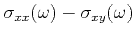
for the graphene quantum Hall system in ac regime,Phys. Rev. B 85, 165445 (2012).
- Taichi Kosugi, Takashi Miyake, Shoji Ishibashi,
Ryotaro Arita and Hideo Aoki:
First-principles structural optimization and electronic structure of
picene superconductor for various potassium-doping levels,
Phys. Rev. B 84, 214506 (2011).
- Y. Ikebe, T. Morimoto, R. Masutomi, T. Okamoto, H. Aoki and R. Shimano:
Optical Hall effect in the integer quantum Hall regime,
Phys. Rev. Lett. 104, 256802 (2010).
- Hirofumi Sakakibara, Hidetomo Usui,
Kazuhiko Kuroki, Ryotaro Arita and Hideo Aoki:
Two orbital model explains
why the single-layer Hg cuprate have higher
superconducting transition temperature than the La cuprate,
Phys. Rev. Lett. 105, 057003 (2010).
- Takashi Oka and Hideo Aoki:
Dielectric breakdown in a Mott Insulator: many-body Schwinger-Landau-Zener mechanism studied with a generalized Bethe ansatz,
Phys. Rev. B 81, 033103 (2010).
- Shimpei Endo, Takashi Oka and Hideo Aoki:
Realization of tight-binding photonic bands
in metallophotonic waveguide networks
with application to a flat band in kagome lattice,
Phys. Rev. B 81, 113104 (2010).
- Takahiro Morimoto, Yshai Avishai and Hideo Aoki:
Dynamical scaling analysis of the optical Hall conductivity
in the quantum Hall regime,
Phys. Rev. B 82, 081404(R) (2010).
- Takashi Oka and Hideo Aoki:
Charge confinement in carbon-nanotubes as a realization of
extended massive Schwinger model,
submitted (arXiv:1007.5393).
- Tohru Kawarabayashi, Takahiro Morimoto, Yasuhiro Hatsugai
and Hideo Aoki:
Anomalous
criticality in the quantum Hall transition at
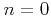
Landau level of graphene with chiral-symmetric disorders,Phys. Rev. B 82, 195426 (2010).
- Haruki Watanabe, Yasuhiro Hatsugai and Hideo Aoki:
Half-integer contributions to the quantum
Hall conductivity from single Dirac cones,
Phys. Rev. B 82, 241403(R) (2010).
- Y. Nagai, K. Kuroki, M. Machida and H. Aoki:
Impurity effect in multi-orbital, sign-reversing
s-wave superconductors,
submitted (arXiv:1012.5565).
- Takashi Oka, Hideo Aoki:
Nonequilibrium magnetic and superconducting phases in the two-dimensional Hubbard model coupled to electrodes
Phys. Rev. B 82, 064516 (2010).
- Yuji Suwa, Ryotaro Arita, Kazuhiko Kuroki and Hideo Aoki:
First-principles study of ferromagnetism for an
organic polymer dimethylaminopyrrole -- a realization of
organic periodic Anderson model,
Phys. Rev. B 82, 235127 (2010).
2009
- Taichi Kosugi, Takashi Miyake, Shoji Ishibashi, Ryotaro Arita and Hideo Aoki:
First-principles electronic structure of solid picene,
J. Phys. Soc. Jpn 78, 113704 (2009).
- Kazuhiko Kuroki and Hideo Aoki:
Unconventional pairing originating from
disconnected Fermi surfaces in the iron-based superconductor,
Physica C 469, 635 (2009).
- Tohru Kawarabayashi, Yasuhiro Hatsugai and Hideo Aoki:
Quantum Hall plateau transition in graphene with correlated random
hopping,
Phys. Rev. Lett. 103, 156804 (2009).
- Takahiro Morimoto, Yasuhiro Hatsugai and Hideo Aoki:
Optical Hall conductivity in ordinary and graphene QHE systems,
Phys. Rev. Lett. 103, 116803 (2009).
- Kazuhiko Kuroki, Hidetomo Usui, Seiichiro Onari, Ryotaro Arita and
Hideo Aoki: Pnictogen height as a possible switch between
high-
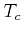
nodeless and low- nodal pairings in the iron based superconductors,Phys. Rev. B 79, 224511 (2009) (Editors' Suggestion; Featured in Physics).
- Naoto Tsuji, Takashi Oka, and Hideo Aoki:
Nonequilibrium steady state in photoexcited correlated electrons with dissipation,
Phys. Rev. Lett. 103, 047403 (2009).
- P.A. Maksym, Y. Nishi, D.G. Austing, T. Hatano, L.P. Kouwenhoven,
H. Aoki and S. Tarucha:
Accurate model of a vertical pillar quantum dot,
Phys. Rev. B 79, 115314 (2009).
- Takashi Oka and Hideo Aoki:
Photovoltaic Hall effect in graphene,
Phys. Rev. B 79, 081406(R) (2009) [erratum: Phys. Rev. B 79, 169901(E) (2009).]
2008
- Kazuhiko Kuroki, Seiichiro Onari, Ryotaro Arita,
Hidetomo Usui, Yukio Tanaka, Hiroshi Kontani and Hideo Aoki:
Unconventional superconductivity originating from
disconnected Fermi surfaces in LaO
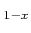
FFeAs,Phys. Rev. Lett. 101, 087004 (2008). [erratum: Phys. Rev. Lett. 102, 109902(E) (2009).]
- Takahiro Morimoto, Yasuhiro Hatsugai and Hideo Aoki:
Cyclotron radiation and emission in graphene,
Phys. Rev. B 78, 073406 (2008).
- Mitsuhiro Arikawa, Yasuhiro Hatsugai and Hideo Aoki:
Edge states in graphene in magnetic fields
-- a speciality of the edge mode embedded in the Landau band,
Phys. Rev. B 78, 205401 (2008).
- Walid Malaeb, Teppei Yoshida, Takashi Kataoka, Atsushi Fujimori,
Masato Kubota, Kanta Ono, Hidetomo Usui, Kazuhiko Kuroki, Ryotaro Arita,
Hideo Aoki, Yoichi Kamihara, Masahiro Hirano, and Hideo Hosono:
Electronic structure and electron correlation in LaFeAsOF
 and LaFePOF,
and LaFePOF,
J. Phys. Soc. Japan 77, 093714 (2008).
- Naoto Tsuji, Takashi Oka, and Hideo Aoki:
Correlated electron systems periodically driven out of equilibrium
-- Floquet + DMFT formalism,
Phys. Rev. B 78, 235124 (2008).
- Takashi Oka and Hideo Aoki:
Photo-induced Tomonaga-Luttinger-like liquid in a Mott insulator,
Phys. Rev. B 78, 241104(R) (2008).
- Kazuhiko Kuroki, Seiichiro Onari, Ryotaro Arita,
Hidetomo Usui, Yukio Tanaka, Hiroshi Kontani and Hideo Aoki:
Unconventional pairing originating from
disconnected Fermi surfaces in the iron-based superconductor,
New J. Phys. 11, 025017 (2009).
2007
- Naoto Tsuji, Shigehiro Takajo and Hideo Aoki:
Large orbital magnetic moments in carbon nanotubes generated by
resonant transport,
Phys. Rev. B 75, 153406 (2007).
- Masaki Tezuka, Ryotaro Arita and Hideo Aoki:
Phase diagram for the half-filled one-dimensional
Hubbard-Holstein model,
Phys. Rev. B 76, 155114 (2007).
- Shiro Sakai, Ryotaro Arita and Hideo Aoki:
Itinerant ferromagnetism in the multiorbital Hubbard model
-- a dynamical mean-field study,
Phys. Rev. Lett. 99, 216402 (2007).
2006
- Seiichiro Onari, Ryotaro Arita, Kazuhiko Kuroki and Hideo Aoki:
Superconductivity from a long-range interaction:
A crossover between the electron gas and the lattice model,
Phys. Rev. B 73, 014526 (2006).
- Y. Nishi, P. A. Maksym, D. G. Austin, T. Hatano, L. P. Kouwenhoven,
H. Aoki and S. Tarucha:
Intermediate low spin states in a few-electron quantum dot in the
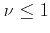
regime,Phys. Rev. B 74, 033306 (2006).
- Hosho Katsura and Hideo Aoki:
Exact supersymmetry in the relativistic hydrogen atom in general dimensions
-- supercharge and the generalized Johnson-Lippmann operator,
J. Math. Phys. 47, 032301 (2006).
- Shiro Sakai, Ryotaro Arita, Karsten Held and Hideo Aoki:
Quantum Monte Carlo study for multiorbital systems with preserved
spin and orbital rotational symmetries,
Phys. Rev. B 74, 155102 (2006).
- Yasuhiro Hatsugai, Takahiro Fukui and Hideo Aoki:
Topological analysis of the quantum Hall effect in graphene:
Dirac-Fermi transition across
van Hove singularities and the edge vs bulk quantum numbers,
Phys. Rev. B 74, 205414 (2006).
2005
- Takashi Oka, Norio Konno, Ryotaro Arita and Hideo Aoki:
Breakdown of an electric-field driven system
-- a mapping to a quantum walk,
Phys. Rev. Lett. 94, 100602 (2005).
- Manabu Kiguchi, Ryotaro Arita, Genki Yoshikawa, Yoshiaki Tanida,
Susumu Ikeda, Shiro Entani, Ikuyo Nakai, Hiroshi Kondoh, Toshiaki Ohta,
Koichiro Saiki, and Hideo Aoki:
Metal-induced gap states in epitaxial organic-insulator/metal interfaces,
Phys. Rev. B 72, 075446 (2005).
- M. Koshino and H. Aoki:
Electronic structure of an electron
on the gyroid surface, a helical labyrinth,
Phys. Rev. B 71, 73405 (2005).
- Takashi Oka and Hideo Aoki:
Ground-state decay rate for the Zener breakdown in
band and Mott insulators,
Phys. Rev. Lett. 95, 137601 (2005).
- Seiichiro Onari, Ryotaro Arita, Kazuhiko Kuroki and Hideo Aoki:
The spin-triplet superconductivity induced by the charge
fluctuation in extended Hubbard model,
J. Phys. Soc. Jpn 74, 2579-2585 (2005).
- Masaki Tezuka, Ryotaro Arita and Hideo Aoki:
Density-matrix renormalization group study of
pairing when electron-electron and electron-phonon interactions
coexist -- an effect of the electronic band structure,
Phys. Rev. Lett. 95, 226401 (2005).
2004
- Ryotaro Arita, Kazuhiko Kuroki, and Hideo Aoki:
Magnetic-field induced triplet superconductivity in the Hubbard model
on a triangular lattice,
J. Phys. Soc. Jpn 73, 533 (2004).
- Ryotaro Arita, Takashi Miyake, Takao Kotani,
Mark van Schilfgaarde, Takashi Oka, Kazuhiko Kuroki,
Yasuo Nozue and Hideo Aoki:
Electronic properties of alkali-metal loaded zeolites
-- a ``supercrystal" Mott insulator,
Phys. Rev. B 69, 195106 (2004).
- Takashi Kimura, Kazuhiko Kuroki, Ryotaro Arita and Hideo Aoki:
Possibility of superconductivity in the repulsive Hubbard model
on the Shastry-Sutherland lattice,
Phys. Rev. B 69, 054501 (2004).
- Mikito Koshino and Hideo Aoki:
Integer quantum Hall effect and Hofstadter's butterfly spectra
in three-dimensional metals in external periodic modulations,
Phys. Rev. B 69, 081303(R) (2004).
- Ryotaro Arita, Yoshiaki Tanida, Kazuhiko Kuroki,
and Hideo Aoki:
Electronic properties of
metal induced gap states at insulator/metal interfaces
-- dependence on the alkali halide and the possibility of
excitonic mechanism of superconductivity,
Phys. Rev. B 69, 115424 (2004).
- Ryotaro Arita, Seiichiro Onari, Kazuhiko Kuroki and Hideo Aoki:
Off-site repulsion-induced triplet superconductivity:
A possibility for chiral
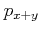
-wave pairing in SrRuO,Phys. Rev. Lett. 92, 247006 (2004).
- Seiichiro Onari, Ryotaro Arita, Kazuhiko Kuroki and Hideo Aoki:
Phase diagram of the two-dimensional extended Hubbard model --
Quantum phase transitions between different pairing
symmetries when charge and spin fluctuations coexist,
Phys. Rev. B 70, 94523 (2004).
- Ryotaro Arita, Yoshiaki Tanida, Shiro Entani,
Manabu Kiguchi, Koichiro Saiki and Hideo Aoki:
Polar surface engineering in ultra-thin MgO(111)/Ag(111)
-- possibility of metal-insulator transition and magnetism,
Phys. Rev. B 69, 235423 (2004).
- Susumu Okada, Ryotaro Arita, Atsushi Oshiyama, Yutaka Matsuo, Eiichi Nakamura
and Hideo Aoki:
Electronic Structure of Stacked C
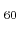
Shuttlecocks,Chem. Phys. Lett. 399, 157 (2004).
- Shiro Sakai, Ryotaro Arita, and Hideo Aoki:
Numerical algorithm for the double-orbital Hubbard model
-- Hund-coupled pairing symmetry in the doped case,
Phys. Rev. B 70, 172504 (2004).
2003
- M. Koshino and H. Aoki:
Integer quantum Hall effect in isotropic 3D crystals,
Phys. Rev. B 67, 195336 (2003).
- Manabu Kiguchi, Ryotaro Arita, Genki Yoshikawa, Yoshiaki Tanida,
Masao Katayama, Koichiro Saiki, Atsushi Koma and Hideo Aoki:
Metal-induced gap states at well defined alkali-halide/metal Interfaces,
Phys. Rev. Lett. 90, 196803 (2003).
- S. Onari, R. Arita, K. Kuroki and H. Aoki:
Superconductivity in repulsive electron systems having three-dimensional
disconnected Fermi surfaces,
Phys. Rev. B 68, 024525 (2003).
- Takashi Oka, Ryotaro Arita and Hideo Aoki:
Breakdown of a Mott insulator -- non-adiabatic tunneling mechanism,
Phys. Rev. Lett. 91, 066406 (2003).
- Ryotaro Arita, Yuji Suwa, Kazuhiko Kuroki and Hideo Aoki:
Flat-band ferromagnetism in undoped and doped polyaminotriazole crystal,
Phys. Rev. B 68, 140403(R) (2003).
- Yuji Suwa, Ryotaro Arita, Kazuhiko Kuroki and Hideo Aoki:
Flat-band ferromagnetism in organic polymers designed by a
computer simulation,
Phys. Rev. B 68, 174419 (2003).
2002
- R. Arita, Y. Suwa, K. Kuroki and H. Aoki:
Gate-induced band ferromagnetism in an organic polymer,
Phys. Rev. Lett. 88, 127202 (2002).
- M. Koshino, H. Aoki, T. Osada, K. Kuroki and S. Kagoshima:
Phase diagram for the Hofstadter butterfly and integer quantum Hall
effect in three dimensions,
Phys. Rev. B 65, 045310 (2002).
- S. Onari, K. Kuroki, R. Arita and H. Aoki:
Superconductivity induced by interband nesting in the three-dimensional
honeycomb lattice,
Phys. Rev. B 65, 184525 (2002).
- M. Koshino, H. Aoki and T. Osada:
Field-induced SDW and butterfly spectrum in three dimensions,
Phys. Rev. B 65, 205311 (2002).
- Y. Tanuma, K. Kuroki, Y. Tanaka, R. Arita, S. Kashiwaya and H. Aoki:
Tomography of pairing symmetry from magnetotunneling
spectroscopy -- a case study for quasi-1D organic superconductors,
Phys. Rev. B 66, 094507 (2002).
- Mikito Koshino, Hideo Aoki and Bertrand I. Halperin:
Wrapping current versus bulk integer quantum Hall effect
in three dimensions,
Phys. Rev. B 66, 081301(R) (2002).
- Takashi Kimura, Yuji Zenitani, Kazuhiko Kuroki, Ryotaro Arita and
Hideo Aoki:
Hybridization-induced superconductivity from the electron
repulsion on a tetramer lattice having a disconnected Fermi surface,
Phys. Rev. B 66, 212505 (2002).
2001
- K. Kuroki, M. Ogata, R. Arita and H. Aoki:
Crib-shaped triplet-pairing gap function for an orthogonal
pair of quasi-one-dimensional Fermi surfaces in SrRuO,
Phys. Rev. B 63, 60506(R) (2001).
- K. Kuroki, R. Arita and H. Aoki:
Spin-triplet f-wave-like pairing proposed for an organic
superconductor (TMTSF)PF,
Phys. Rev. B 63, 94509 (2001).
- M. Koshino, H. Aoki, K. Kuroki, S. Kagoshima and T. Osada:
Hofstadter butterfly and integer quantum Hall effect in three dimensions,
Phys. Rev. Lett. 86, 1062 (2001).
- M. Onoda, T. Mizusaki and H. Aoki,
Effective mass staircase and the Fermi liquid
parameters for the fractional quantum Hall composite fermions,
Phys. Rev. B 64, 235315 (2001).
- H. Aoki, M. Koshino, H. Morise, D. Takeda and K. Kuroki:
Electronic structure of periodic surfaces
-- `topological band structure',
Phys. Rev. B 65, 035102 (2001).
- R. Arita, Y. Tanida, K. Kuroki and H. Aoki:
Image-potential band-gap narrowing at a metal/semiconductor interface,
Phys. Rev. B 64, 245112 (2001).
2000
- R. Arita, K. Kuroki and H. Aoki:
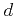
- and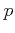
-wave superconductivity mediated by spin fluctuations in two- and three-dimensional single-band repulsive Hubbard model,J. Phys. Soc. Japan 69, 1181-1191 (2000).
- R. Arita, S. Onoda, K. Kuroki and H. Aoki:
Magnetic properties of the Hubbard model on three-dimensional lattices:
fluctuation-exchange and two-particle self-consistent studies,
J. Phys. Soc. Japan 69, 785-795 (2000).
- R. Arita, K. Kuroki and H. Aoki:
Electron-correlation-originated negative magnetoresistance
in a system having a partly flat band,
Phys. Rev. B 61, 3207-3210 (2000).
- R. Arita and H. Aoki:
Relationship between spiral and ferromagnetic states in the Hubbard model
in the thermodynamic limit,
Phys. Rev. B 61 12261-12270 (2000).
- Masaru Onoda, Takahiro Mizusaki, Takaharu Otsuka and Hideo Aoki:
Excitation spectrum and effective mass of the even-fraction
quantum Hall liquid,
Phys. Rev. Lett. 84, 3942-3945 (2000).
- S. Muto and H. Aoki: Persistence of vibrational
modes in a classical two-dimensional electron liquid,
J. Phys. Condensed Matter 12, L83-L86 (2000).
1999
- H. Imamura, P. A. Maksym and H. Aoki:
Vertically coupled double quantum dots in magnetic fields,
Phys. Rev. B 59, 5817-5825 (1999).
- S. Muto and H. Aoki: Crystallization of a classical two-dimensional
electron system -- Positional and orientational orders,
Phys. Rev. B 59, 14911-14914 (1999).
- K. Kuroki and H. Aoki:
Superconductivity and spin correlation in organic
conductors: a quantum Monte Carlo study,
Phys. Rev. B 60, 3060-3063 (1999).
- K. Kuroki, R. Arita and H. Aoki:
Link between the spin fluctuation and Fermi surface in high
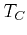
cuprates -- A consistent description within the single-band Hubbard model,Phys. Rev. B 60, 9850-9854 (1999).
- R. Arita, K. Kuroki and H. Aoki:
Spin-fluctuation exchange study of superconductivity in two- and
three-dimensional single-band Hubbard model,
Phys. Rev. B 60, 14585-14588 (1999).
1998
- T. Kimura, K. Kuroki and H. Aoki:
Pairing correlation in the three-leg Hubbard ladder --
Renormalization group and quantum Monte Carlo studies,
J. Phys. Soc. Japan 67, 1377-1390 (1998).
- K. Kuroki and H. Aoki: A consistent description of the
pairing symmetry in hole and electron doped cuprates
within the two-dimensional Hubbard model,
J. Phys. Soc. Japan 67, 1533-1536 (1998).
- R. Arita, K. Kuroki, H. Aoki and M. Fabrizio:
DMRG study of the spin gap in a one-dimensional Hubbard model --
effect of the distant transfer and exchange coupling,
Phys. Rev. B 57, 10324-10327 (1998).
- R. Arita, Y. Shimoi, K. Kuroki and H. Aoki:
Flat-band ferromagnetism induced by off-site repulsions,
Phys. Rev. B 57, 10609-10612 (1998).
- R. Arita, K. Kuroki, H. Aoki, A. Yajima, M. Tsukada,
S. Watanabe, M. Ichimura, T. Onogi, T. Hashizume:
Ferromagnetism in a Hubbard model for an atomic quatum wire:
A realization of flat-band magnetism from even-membered rings,
Phys. Rev. B 57, R6854-6857 (1998).
- H. Imamura, H. Aoki and P. A. Maksym:
Spin-blockade in single and double quantum dots in magnetic fields --
a correlation effect,
Phys. Rev. B 57, R4257-4260 (1998).
- R. Arita, K. Kusakabe, K. Kuroki and H. Aoki:
Spectral function of the spiral spin state in the
trestle and ladder Hubbard model,
Phys. Rev. B 58 (1998) R11833-11836.
1997
- K. Kuroki, H. Aoki, T. Hotta and Y. Takada:
Detection of pairing correlation in the two-dimensional Hubbard model,
Phys. Rev. B 55, 2764-2767 (1997).
- T. Kimura, K. Kuroki and H. Aoki:
Superconductivity in the three-leg Hubbard ladder --
a Quantum Monte Carlo study,
J. Phys. Soc. Japan 66, 1599-1602 (1997).
- R. Arita, K. Kusakabe, K. Kuroki and H. Aoki:
Extended Aharonov-Bohm period analysis of strongly correlated
electron systems,
J. Phys. Soc. Japan 66, 2086-2096 (1997).
- K. Kuroki, R. Arita and H. Aoki:
Numerical study of a superconductor-insulator transition in
a half-filled Hubbard chain with distant transfers,
J. Phys. Soc. Japan 66, 3371-3374 (1997).
- K. Kuroki and H. Aoki: Enhancement of the d
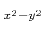
pairing correlation in the two-dimensional Hubbard model -- a quantum Monte Carlo study,Phys. Rev. B 56, R14287-14290 (1997).
- T. Nakajima and H. Aoki: Spin-squeezed ground states
in the bilayer quantum Hall ferromagnet,
Phys. Rev. B 56, R15549-15552 (1997).
1996
- T. Kimura, K. Kuroki and H. Aoki: Generation of
spin-polarized currents in Zeeman-split Tomonaga-Luttinger models,
Phys. Rev. B 53, 9572-9575 (1996).
- H. Imamura, P. A. Maksym and H. Aoki: Magic numbers and
optical absorption spectrum in vertically coupled quantum dots
in the fractional quantum Hall regime,
Phys. Rev. B 53, 12 613-12 616 (1996).
- T. Kimura, K. Kuroki and H. Aoki: Correlation functions in
the three-chain Hubbard ladder,
Phys. Rev. B 54, R9608-9611 (1996).
- K. Kuroki, T. Kimura and H. Aoki: Quantum Monte Carlo study
of the pairing correlation in the Hubbard ladder,
Phys. Rev. B 54, R15 641-15 644 (1996).
- T. Terao, T. Nakayama and H. Aoki: Multifractality of the
quantum Hall wave functions in higher Landau levels,
Phys. Rev. B 54, 10 350-10 353 (1996).
- K. Kusakabe and H. Aoki: Detection of pairing from the
extended Aharonov-Bohm period in strongly correlated electron systems,
J. Phys. Soc. Japan 65, 2772-2775 (1996).
- K. Kuroki and H. Aoki: Quantum Monte Carlo evidence for
superconductivity in the three-band Hubbard model in two dimensions,
Phys. Rev. Lett. 76, 4400-4403 (1996); [K. Kuroki and H. Aoki: Kuroki and Aoki reply, Phys. Rev. Lett. 78, 161 (1997)].
- H. Aoki, M. Ando and H. Matsumura: Hofstadter butterflies for
flat bands,
Phys. Rev. B 54, R17296-17299 (1996).
1995
- T. Nakajima and H. Aoki, Manifestation of spin degrees of freedom in
the double fractional quantum Hall system,
Phys. Rev. B 51, 7874-7877 (1995).
- T. Nakajima and H. Aoki, Composite-fermion picture for the double fractional quantum Hall system,
Phys. Rev. B 52, 13780-13783 (1995).
- T. Kimura, K. Kuroki and H. Aoki, Transport properties of coupled one-dimensional interacting electron systems with impurities,
Phys. Rev. B 51, R13860-13863 (1995).
- K. Ishida, H. Aoki and T. Ogawa: One-dimensional biexciton in a tight-binding model and its optical properties,
Phys. Rev. B 52, 8980-8991 (1995).
1994
- K. Kusakabe and H. Aoki: Ferromagnetic spin wave theory in the multiband Hubbard model having a flat band,
Phys. Rev. Lett. 72, 144-147 (1994).
- K. Kuroki and H. Aoki: Superconductivity in a repulsively interacting two-band Fermi gas,
Phys. Rev. Lett. 72, 2947-2950 (1994).
- K. Kuroki, K. Kusakabe and H. Aoki: Phase diagram of the extended attractive Hubbard model in one dimension,
Phys. Rev. B 50, 575-578 (1994).
- T. Kimura, K. Kuroki, H. Aoki and M. Eto: Conductivity of an interacting two-channel Tomonaga-Luttinger model,
Phys. Rev. B 49, R16852-16855 (1994).
- K. Kusakabe and H. Aoki: Scaling properties of the ferromagnetic states in the Hubbard model,
Phys. Rev. B 50, 12991-12994 (1994).
- K. Kusakabe and H. Aoki: Spin-twist driven persisten current in a
strongly correlated two-dimensional electron system: a
manifestation of the gauge field,
Phys. Rev. B 52, R8684-8687 (1994).
- T. Nakajima and H. Aoki, Composite-fermion picture for the spin-wave excitation in the fractional quantum Hall system,
Phys. Rev. Lett. 73, 3568-3571 (1994).
1993
- K. Ishida, T. Chikyu and H. Aoki: One-dimensional exciton in
a two-band tight-binding model with long-range interactions,
Phys. Rev. B, 47, 7594-7597 (1993).
- K. Kuroki and H. Aoki: Superconductivity in metal-insulator composite bands: A realization of negative-
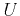
pairing in purely repulsive systems,Phys. Rev. B 48, 7598-7617 (1993).
- N. Shima and H. Aoki: Electronic structure of super-honeycomb systems: a peculiar realization of semimetal/semiconductor classes and ferromagnetism,
Phys. Rev. Lett. 71, 4389-4392 (1993).
[1991-1992]
- K. Kusakabe and H. Aoki: Low-lying excitations
in the half-filled and doped Hubbard model in one dimension,
Phys. Rev. B 44, 7863-7869 (1991).
- K. Kusakabe and H. Aoki: High-spin states in the Hubbard
model: generalized Hund's coupling and a crossover to strong U
regime,
J. Phys. Soc. Japan 61, 1165-1168 (1992).
- K. Kuroki, H. Aoki and Y. Takada: Superconductivity due to
interband attraction: competition between diagonal and off-
diagonal long-range orders,
J. Phys. Soc. Japan, 61, 1161-1164 (1992).
- H. Aoki and H. Suezawa: Landau quantization of electrons on
a sphere,
Phys. Rev. A 46, R1163-1166 (1992).
- K. Kuroki and H. Aoki: Realization of negative-U
superconductivity in a class of purely repulsive systems:
interacting carrier and insulating bands,
Phys. Rev. Lett. 69, 3820-3823 (1992).
[1989-1990]
- S. Tsuneyuki, Y. Matsui, H. Aoki and M. Tsukada: New
pressure-induced structural transformations in silica obtained by
computer simulation,
Nature 339, 209-211 (1989).
- H. Aoki and S. Tsuneyuki: Silica polymorphs,
Nature 340, 193 (1989).
- S. Tsuneyuki, H. Aoki, M. Tsukada and Y. Matsui: Molecular-
dynamics study of the
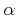
to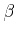
structural phase transition of quartz,Phys. Rev. Lett. 64, 776-779 (1990).
- K. Kuroki and H. Aoki: Cooper pairing in a two-band Hubbard
model: a quantum Monte Carlo study,
Solid State Commun. 73, 563-567 (1990).
- H. Aoki and K. Kuroki: Superconductivity in a two-band
Hubbard model,
Phys. Rev. B 42, 2125-2136 (1990).
- H. Aoki: Quantum Hall effect in a self-similar system,
Phys. Rev. B 42, 6869-6872 (1990).
[1987-1988]
- H. Aoki and H. Kamimura: Jahn-Teller-effect mediated
superconductivity in oxides,
Solid State Commun. 63, 665-669 (1987).
- C. Itoh, T. Miyazaki, K. Aizawa, H. Aoki and M. Okazaki, Monte
Carlo study of lattice-mismatched epitaxy,
J. Phys. C: Solid State Phys. 21, 4527-4544 (1988).
- S. Tsuneyuki, M. Tsukada, H. Aoki and Y. Matsui:
First-principles interatomic potential of silica applied to molecular
dynamics,
Phys. Rev. Lett. 61, 869-872 (1988).
1986
- A. Shimizu, H. Aoki and H. Kamimura: Decimation study of the
interplay of strong electron-electron interactions and disorder,
J. Phys. C: Solid State Phys. 19, 725-738 (1986).
- H. Aoki: Fractal dimensionality of wave functions at the
mobility edge: quantum fractal in the Landau levels,
Phys. Rev. B 33, 7310-7313 (1986).
- H. Aoki: A novel Landau-level laser in the quantum Hall
regime,
Appl. Phys. Lett. 48, 559-560 (1986).
- H. Aoki and T. Ando: Universality of quantum Hall effect:
topological invariant and observable,
Phys. Rev. Lett. 57, 3093-3096 (1986).
1985
- H. Aoki: Electronic structure of disordered systems with
multi-orbitals,
J. Phys. C: Solid State Phys. 18, 2109-2118 (1985).
- H. Aoki: Two-dimensional electrons in magnetic fields in a
multiply-connected Aharonov-Bohm geometry,
J. Phys. C: Solid State Phys. 18, 1885-1890 (1985).
- H. Aoki: Two-dimensional localisation of electrons on a
lattice in magnetic fields,
J. Phys. C: Solid State Phys. 18, L67-71 (1985).
- H. Aoki and T. Ando: Critical localization in two-dimensional
Landau quantization,
Phys. Rev. Lett. 54, 831-834 (1985).
- T. Ando and H. Aoki: Finite-size scaling study of
localization in Landau levels,
J. Phys. Soc. Japan 54, 2238-2249 (1985).
- H. Aoki: Aharonov-Bohm effect for the quantum Hall conduction
on a disordered lattice,
Phys. Rev. Lett. 55, 1136-1139 (1985).
[1982-1984]
- H. Aoki: Gauge-transformation study of the quantised Hall
effect,
J. Phys. C: Solid State Phys. 15, L1227-1233 (1982).
- H. Aoki: Gauge-transformation study of two-dimensional
localisation in magnetic fields,
J. Phys. C: Solid State Phys. 16, 1893-1900 (1983).
- H. Aoki: Critical behaviour of extended states in disordered
systems,
J. Phys. C: Solid State Phys. 16, L205-208 (1983).
- H. Aoki: Structure of the wavefunction in disordered systems
in magnetic fields,
J. Phys. C: Solid State Phys. 17, 1875-1883 (1984).
- H. Aoki: Electronic structure of disordered systems with
periodic lattice distortion,
J. Phys. C: Solid State Phys. 17, 1885-1895 (1984).
1981
- H. Aoki: Anderson localisation in anisotropic systems,
Solid State Commun. 37, 677-680 (1981).
- H. Aoki: Electronic structure of disordered intrinsic
semiconductor and s-d systems: Two-band localisation,
J. Phys. C: Solid State Phys. 14, 2771-2784 (1981).
- H. Aoki and T. Ando: Effect of localization on the Hall
conductivity in the two-dimensional system in strong magnetic
fields,
Solid State Commun. 38, 1079-1082 (1981).
(reprinted as Solid State Commun. 88, 951-954 (1993) in a celebratory issue to commemorate 30 years of Solid State Communications).
1980
- H. Aoki: Real-space renormalisation-group theory for Anderson
localisation: Decimation method for electron systems,
J. Phys. C: Solid State Phys. 13, 3369-3386 (1980).
- C.R. Lee, H. Aoki and H. Kamimura: Lattice-gas theory of
order-disorder transition in the first-stage graphite-alkali
intercalation compounds,
J. Phys. Soc. Japan 49, 870-877 (1980).
1979
- H. Aoki: Effect of coexistence of random potential and
electron-electron interaction in two-dimensional systems: Wigner
glass,
J. Phys. C: Solid State Phys. 12, 633-645 (1979).
- E. Yamaguchi, H. Aoki and H. Kamimura: Intra- and inter-state
interactions in Anderson-localised states,
J. Phys. C: Solid State Phys. 12, 4801-4815 (1979).
- H. Aoki: Real-space renormalisation approach to the Anderson
localisation,
Solid State Commun. 31, 999-1002 (1979).
[1975-1978]
- H. Aoki and H. Kamimura: Properties of the Hubbard model for
the arbitrary numbers of up and down spin electrons,
J. Phys. Soc. Japan 39, 1169-1174 (1975).
- H. Aoki and H. Kamimura: The Hubbard model for the
structurally random systems,
J. Phys. Soc. Japan 40, 6-12 (1976).
- H. Aoki and H. Kamimura: Anderson localization in a
two-dimensional electron system under strong magnetic fields,
Solid State Commun. 21, 45-47 (1977).
- H. Aoki: Computer simulation for two-dimensional disordered
electron systems in strong magnetic fields,
J. Phys. C: Solid State Phys. 10, 2583-2593 (1977).
- H. Aoki: Transport properties of two-dimensional disordered
electron systems in strong magnetic fields,
J. Phys. C: Solid State Phys. 11, 3823-3834 (1978).
[Conference Proceedings -- Invited talks]
[2000-]
- Hideo Aoki and Toshikaze Kariyado:
Pressure effects and orbital characters in
cuprate and carbon-based superconductors,
Proc. Int. Conf. Superstripes, Ischia, 27 May-1 June 2013 [J. Superconductivity and Novel Magnetism 27, 995 (2014)].
- Hideo Aoki: A perspective of superconductivity as multiband phenomena:
Cuprate, iron and aromatic systems,
Proc. STRIPE2011, Rome, 2011 [J. Superconductivity and Novel Magnetism 25, 1243 (2012)].
- Hideo Aoki: Unconventional superconductivity originating from
disconnected Fermi surfaces in the iron-based compound,
Proc.
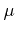
SR2008, Tsukuba, 2008 [Physica B 404, 700-705 (2009)]. - Hideo Aoki:
Model construction and pairing symmetry
for the iron-based oxypnictides,
Proc. 21st Int. Symposium. on Superconductivity, Tsukuba, Oct. 2008 [Physica C 469, 890-893 (2009)].
- Hideo Aoki, Takahiro Fukui and Yasuhiro Hatsugai:
Topological aspects of quantum Hall effect in graphene,
Proc. 17th Int. Conf. on High Magnetic Fields in Semiconductor Physics, Würzburg, 31 July- 4 Aug. 2006 [Int. J. Modern Phys. B 21, 1133 (2007)].
- Naoto Tsuji, Shigehiro Takajo and Hideo Aoki:
Large magnetic moments generated from loop currents in carbon nanotube attached to electrodes
— a theoretical picture,
Proc. 17th Int. Conf. on High Magnetic Fields in Semiconductor Physics, Würzburg, 31 July- 4 Aug. 2006 [Int. J. Modern Phys. B 21, 1198 (2007)].
- Hideo Aoki: Triplet superconductivity
-- spin vs charge fluctuations and fermiology,
Proc. 10th Int. Conf. on Muon Spin Rotation, Relaxation and Resonance, Oxford, Aug. 2005 [Physica B 374-375, 229-234 (2006)].
- Hideo Aoki: Fermiology and interaction in unconventional
superconductors -- triplet versus singlet pairs,
Physica C 437-438, 11-16 (2006).
- Hideo Aoki: Design of electron correlation effects in
interfaces and nanostructures,
Proc. 7th Int. Conf. on Atomically Controlled Surfaces, Interfaces and Nanostructures, Nara, Nov. 2003 [Applied Surf. Sci. 237, 2-12 (2004)].
- Hideo Aoki: Fermiology in correlated electron systems,
in Raymond F. Bishop et al. (ed.):
Recent progress in many-body theories
(`Advances in quantum many-body theory' Vol. 6) (World
Scientific, New Jersey, 2002), pp.13-22
[also published in Int. J. Mod. Phys. B 17, 4953 (2003)].
- Hideo Aoki: Interaction and dimensionality in the quantum Hall physics
in Proc. Int. Workshop on quantum Hall effect -- past, present and future ed. by D. Weiss and R. Haug [Physica E 20, 149-159 (2003)].
[1983-1999]
- H. Aoki: Gauge invariance of the Hall current in two-
dimensional systems,
in Application of High Magnetic Fields in Semiconductor Physics (Lecture Notes in Physics 177) ed. by G. Landwehr (Springer, 1983), pp.11-22.
- H. Aoki: Localization in the quantum Hall regime,
Proc 7th Int. Conf. on Electronic Properties of Two-Dimensional Systems, Santa Fe, 1987 [Surf. Sci. 196, 107-119 (1988)].
- H. Aoki: An overview of the numerical studies of the quantum Hall effect,
in High Magnetic Fields in Semiconductor Physics III -- Quantum Hall Effect, ed. by G. Landwehr (Springer, Berlin, 1992), pp.17-26.
- H. Aoki: Internal degrees of freedom in 0D, 1D and 2D
electron gases in strong magnetic fields,
in High Magnetic Fields in the Physics of Semiconductors ed. by G. Landwehr and W. Ossau (World Scientific, Singapore, 1997) pp. 63-72.
- H. Aoki: Double quantum dots in the
fractional quantum Hall regime,
Proc. Int. Workshop on Novel Physics in Low-Dimensional Electron Systems ed. by T. Chakraborty [Physica E 1, 198-203 (1997)].
[Conference proceedings -- contributed papers]
[2000-]
- Yuta Murakami, Philipp Werner, Naoto Tsuji, Hideo Aoki:
Dynamical mean-field analysis of ordered phases in the half-filled Holstein-Hubbard model,
Proc. Int. Conf. Strongly Correlated Electron Systems (SCES2013) [JPS Conf. Proc. 3, 016023 (2014)].
- H. Sakakibara, K. Suzuki, H. Usui, K. Kuroki, R. Arita and H. Aoki:
Theoretical study of the chemical pressure effect on Tc in the
cuprate superconductors,
Proc. ISS 2013 [Physics Procedia 58, 34 (2014)].
- Hiroki Sakamoto, Yasuhiro Hatsugai, Hideo Aoki and Tohru Kawarabayashi:
Sharp zero-energy Landau levels in multilayer graphene,
Proc. 12th Asia Pacific Physics Conf. [JPS Conf. Proc. 1], 012069 (2014)].
- H. Sakakibara, K. Suzuki, H. Usui, K. Kuroki, R. Arita, D.J. Scalapino
and H. Aoki:
Three-orbital study on the orbital distillation effect in the high Tc cuprates,
Proc. ISS 2012 [Physics Procedia 45, 13 (2013)].
- Hirofumi Sakakibara, Katsuhiro Suzuki, Hidetomo Usui, Kazuhiko Kuroki, Ryotaro Arita, Douglas J. Scalapino and Hideo Aoki:
First-principles band structure and FLEX approach to the pressure effect on Tc of the cuprate superconductors,
Proc. CCP 2012 [J. Phys.: Conf. Ser. 454, 012021 (2013).
- Tohru Kawarabayashi, Takahiro Honda, Hideo Aoki and
Yasuhiro Hatsugai:
Chiral symmetry and fermion doubling in the zero-mode Landau levels of massless Dirac fermions with disorder,
Proc. ICPS 2012, Zürich, Aug 2012 [AIP Conference Proceedings 1566, 283 (2013)].
- T. Kawarabayashi, Y. Hatsugai, T. Morimoto and H. Aoki:
Generalization of chiral symmetry for tilted Dirac cones,
Proc. Localisation 2011, Pohang, Aug 2011 [Int. J. Modern Phys.: Conf. Series, 11, 145 (2012)] .
- Tohru Kawarabayashi, Yasuhiro Hasugai and Hideo Aoki:
Stability of zero-mode Landau levels in bilayer
graphene against disorder in the presence of the
trigonal warping,
Proc. HMF 2012, Chamonix [J. Phys.: Conf. Series, 456 012020 (2013)].
- Yuji Hamamoto, Tohru Kawarabayashi, Hideo Aoki and
Yasuhiro Hatsugai:
Chiral symmetry and many-body effect in multilayer graphene,
Proc. HMF 2012, Chamonix [J. Phys.: Conf. Series 456 012013 (2013)].
- P. A. Maksym and H. Aoki:
Magnetic field induced rearrangement of the vacuum charge in
a graphene quantum dot with a mass gap,
Proc. HMF 2012, Chamonix [J. Phys.: Conf. Series 456 (2013) 012026].
- Takahiro Morimoto and Hideo Aoki:
Flow diagram of the longitudinal and Hall conductivities in ac regime in the disordered graphene quantum Hall system,
Proc. 26th Int. Conf. on Low Temperature Physics (LT26) [J. Phys.: Conf. Ser. 400, 042047 (2012)].
- Y. Hamamoto, Y. Hatsugai and H. Aoki:
Chiral symmetry and electron-electron interaction in many-body gap formation in graphene,
Proc. 26th Int. Conf. on Low Temperature Physics (LT26) [ J. Phys.: Conf. Ser. 400, 042015 (2012)].
- Hirofumi Sakakibara, Hidetomo Usui, Kazuhiko Kuroki, Ryotaro Arita
and Hideo Aoki:
Two-orbital view on the origin of the material dependence of Tc in the
single-layer cuprates,
Proc. LT26 [J. Phys.: Conf. Series 400, 022100 (2012)].
- T. Kawarabayashi, Y. Hatsugai, T. Morimoto and H. Aoki:
Generalization of chiral symmetry for tilted Dirac cones,
Proc. Localisation 2011 [Int. J. Modern Phys.: Conf. Series, to be published] (arXiv:1201.5175).
- Takashi Oka, and Hideo Aoki:
All optical measurement proposed for the photovoltaic Hall effect,
Proc. HMF-19, Fukuoka, July 2010 [J. Phys.: Conf. Ser. 334, 012060 (2011)].
- Takahiro Morimoto, Yshai Avishai and Hideo Aoki:
Dynamical scaling analysis of the optical Hall conductivity in the graphene quantum Hall system with various types of disorder,
Proc. HMF-19, Fukuoka, July 2010 [J. Phys.: Conf. Ser. 334, 012045 (2011)].
- H. Watanabe, Y. Hatsugai and H. Aoki:
Manipulation of the Dirac cones and the anomaly
in the graphene related quantum Hall effect,
Proc. HMF-19, Fukuoka, July 2010 [J. Phys.: Conf. Ser. 334, 012044 (2011)].
- Mitsuhiro Arikawa, Hideo Aoki, Yasuhiro Hatsugai:
Edge states in graphene quantum Hall system with
bond vs potential disorder,
Proc. HMF-19, Fukuoka, July 2010 [J. Phys.: Conf. Ser. 334, 012043 (2011)].
- Tohru Kawarabayashi, Yasuhiro Hatsugai, Hideo Aoki:
Landau level broadening in graphene with long-range disorder
-- Robustness of the level,
Proc. EP2DS Kobe, 2009 [Physica E 42, 759 (2010)].
- P. A. Maksym, M. Roy, M. F. Craciun, S. Russo,
M. Yamamoto, S. Tarucha and H. Aoki:
Proposal for a magnetic field induced graphene dot,
Proc. Quantum Dot 2010 [J. Phys.: Conf. Ser. 245, 012030 (2010)].
- Naoto Tsuji, Takashi Oka, and Hideo Aoki:
Nonequilibrium steady states in correlated electron systems
-- Photoinduced insulator-metal transition and optical response,
J. Phys.: Conf. Ser. 200, 012212 (2010).
- Takashi Oka and Hideo Aoki: Photovoltaic Berry curvature in the
honeycomb lattice,
Proc. Int. Conf. Magnetism, 2009 [J. Phys.: Conf. Ser. 200, 062017 (2010)].
- Takahiro Morimoto, Yasuhiro Hatsugai and Hideo Aoki:
Optical Hall conductivity in 2DEG and graphene QHE systems,
Proc. Int. Conf. Electronic Properties of Two-Dimensional Systems, Kobe, 2009 [Physica E 42, 751 (2010)].
- Kazuhiko Kuroki, Hidetomo Usui, Seiichiro Onari,
Ryotaro Arita and Hideo Aoki:
Pnictogen height as a switch between high nodeless and
low nodal pairings in the iron based superconductors,
Physica C 207, S416 (2010).
- Hirokazu Takashima, Ryotaro Arita, Kazuhiko Kuroki and Hideo Aoki:
Functional renormalization group beyond the static approximation
and its application to the two-dimensional Hubbard model,
Physica C 207, S35 (2010).
- Takashi Oka and Hideo Aoki:
Non-equilibrium superconductivity in a correlated electron system
studied with the Keldysh+FLEX approach,
Physica C 207, S928 (2010).
- Kazuhiko Kuroki, Seiichiro Onari, Ryotaro Arita,
Hidetomo Usui, Yukio Tanaka, Hiroshi Kontani, and Hideo Aoki:
Unconventional superconductivity originating from disconnected Fermi
surfaces in the iron-based oxypnictide,
Proc. Int. Symp. Fe-Pnictide Superconductors, Tokyo, 2008 [J. Phys. Soc. Jpn 77, Suppl. C, 96 (2008)].
- Walid Malaeb, Teppei Yoshida, Takashi Kataoka, Atsushi Fujimori,
Masato Kubota, Kanta Ono, Hidetomo Usui, Kazuhiko Kuroki, Ryotaro Arita,
Hideo Aoki, Yoichi Kamihara, Masahiro Hirano, and Hideo Hosono:
Photoemission study of the electronic structure of
LaFeAsOF and LaFePOF,
Proc. Int. Symp. Fe-Pnictide Superconductors, Tokyo, 2008 [J. Phys. Soc. Jpn 77, Suppl. C, 69 (2008)].
- Takashi Oka and Hideo Aoki:
Photo-induced Hall effect in graphene -- effect of boundary types,
Proc. 3rd Int. Conf. on Photo-Induced Phase Transitions and Cooperative Phenomena, Osaka, Nov 2008 [J. Phys.: Conf. Series 148, 012061 (2009)].
- N. Tsuji, T. Oka and H. Aoki:
Photoinduced insulator-metal transition and nonlinear optical response of correlated electrons - a DMFT analysis,
Proc. 3rd Int. Conf. on Photo-Induced Phase Transitions and Cooperative Phenomena, Osaka, Nov 2008 [J. Phys.: Conf. Series 148, 012058 (2009)].
- T. Oka and H. Aoki:
Photo-induced metallic liquid in a one-dimensional Mott insulator in
AC fields,
Proc. Int. Conf. Low Temperature Physics, Amsterdam 2008 [J. Phys.: Conf. Series 150, 042152 (2009)].
- Ryotaro Arita, Seiichiro Onari, Hidetomo Usui, Kazuhiko Kuroki,
Yukio Tanaka, Hiroshi Kontani, and Hideo Aoki:
Minimal Model for Study on Superconductivity
in LaFeAsOF Based on ab-initio Downfolding,
Proc. Int. Conf. Low Temperature Physics, Amsterdam 2008 [J. Phys.: Conf. Series 150, 052010 (2009)].
- Hirokazu Takashima, Ryotaro Arita, Kazuhiko Kuroki, Hideo Aoki:
An improved algorithm for the functional renormalization group and its application to the 2D Hubbard model,
Proc. Int. Conf. Low Temperature Physics, Amsterdam 2008 [J. Phys.: Conf. Series 150, 052261 (2009)].
- Naoto Tsuji, Takashi Oka and Hideo Aoki:
Photoinduced insulator-metal transition in correlated electrons
-- a Floquet analysis with the dynamical mean-field theory,
Proc. Int. Conf. Low Temperature Physics, Amsterdam 2008 [J. Phys.: Conf. Series 150, 042216 (2009)].
- N. Horiguchi, T. Oka and H. Aoki:
Non-equilibrium dynamics in Mott-to-superfluid transition in Bose-Einstein condensation in optical lattices,
Proc. 25th Int. Conf. Low Temperature Physics, Amsterdam 2008 [J. Phys.: Conf. Series 150, 032007 (2009)].
- Takahiro Morimoto, Yasuhiro Hatsugai and Hideo Aoki:
Cyclotron radiation and emission in graphene
-- a possibility of Landau-level laser,
Proc. Int. Conf. Low Temperature Physics, Amsterdam 2008 [J. Phys.: Conf. Series 150, 022059 (2009)].
- Takahiro Morimoto, Yasuhiro Hatsugai and Hideo Aoki:
Optical Hall conductivity in QHE systems,
Proc. Int. Conf. Low Temperature Physics, Amsterdam 2008 [J. Phys.: Conf. Series 150, 022060 (2009)].
- Mitsuhiro Arikawa, Yasuhiro Hatsugai and Hideo Aoki:
Edge states for the Laudau level in graphene,
Proc. Int. Conf. Low Temperature Physics, Amsterdam 2008 [J. Phys.: Conf. Series 150, 022003 (2009)].
- Yasuhiro Hatsugai, Takahiro Fukui and Hideo Aoki:
Topological low-energy modes in
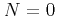
Landau levels of graphene -- a possibility of a quantum-liquid ground state,Proc. 17th Int. Conf. on Electronic Properties of Two-Dimensional Systems, Genova, July 2007 [Physica E 40, 1530 (2008)].
- Tatsuya Nakajima and Hideo Aoki:
Landau quantization of graphene including diamagnetic shift and shrinkage of wave function,
Proc. 17th Int. Conf. on Electronic Properties of Two-Dimensional Systems, Genova, July 2007 [Physica E 40, 1354-1356 (2008)].
- Y. Hatsugai, T. Fukui and H. Aoki:
Topological aspects of graphene --
Dirac fermions and the bulk-edge correspondence in magnetic fields,
Proc. Int. Conf. on Graphene, Dresden, 2006 [Eur. Phys. J. Special Topics 148, 133-141 (2007)].
- Peter A. Maksym, Ryotaro Arita and Hideo Aoki:
Spin configuration in the electron molecule in
few-electron quantum dots in strong magnetic fields
-- superposition of multiple configurations,
Proc. 17th Int. Conf. on High Magnetic Fields in Semiconductor Physics, Würzburg, 30 July- 4 Aug 2006 [Int. J. Modern Phys. B 21, 1643 (2007)].
- Masaki Tezuka, Ryotaro Arita and Hideo Aoki:
Density-matrix renormalization group study of phase diagram in systems
with strong electron-electron and electron-phonon interactions,
Proc. 24th Int. Conf. on Low Temperature Physics, Florida, 10-17 August 2005 [AIP Conf. Proc. 850, 551 (2006)].
- M. Kiguchi, G. Yoshikawa, K. Saiki, R. Arita, H. Aoki:
Metal Induced Gap States at tetratetracontane/Cu Interface,
Proc. Int. Conf. on Formation of Semiconductor Interfaces, ed. by C. Girardeaux, et al [Journal de Phys. IV 132, 199-203 (2006)].
- P. A. Maksym and H. Aoki: Electron-molecules in quantum dots
-- Transitions between electron-molecule states in
electrostatic quantum dots,
Proc. Int. Conf. on Quantum Dots, Chamonix, 2006 [Phys. stat. sol. (c) 3, 3798-3801 (2006)].
- S. Sakai, R. Arita, H. Aoki:
Application of the perturbation series expansion
quantum Monte Carlo method to multiorbital systems having Hund's coupling,
Proc. SCES'05, Vienna, July 2005 [Physica B 378-380, 288-289 (2006)].
- R. Arita, S. Onari, K. Kuroki and H. Aoki:
Off-site repulsion-induced triplet pairing: DCA and FLEX study for
SrRuO,
Physica B 359-361, 584-586 (2005).
- S. Onari, R. Arita, K. Kuroki, and H. Aoki:
Phase diagram of the two-dimensional extended Hubbard model:
pairing from charge and spin fluctuations,
Physica B 359-361, 518-520 (2005).
- Takashi Oka, Ryotaro Arita, and Hideo Aoki:
Nonlinear transport in one dimensional Mott insulator in strong electric
fields,
Physica B 359-361, 759-761 (2005).
- M. Tezuka, R. Arita and H. Aoki:
A DMRG study of correlation functions in the Holstein-Hubbard model,
Physica B 359-361, 708 (2005).
- S. Sakai, R. Arita and H. Aoki:
Superconductivity in multi-orbital systems:
a dynamical mean field + quantum Monte Carlo study,
Physica B 359-361, 554 (2005).
- K. Kimura, K. Kuroki, R. Arita and H. Aoki:
Superconductivity in the Hubbard model on the Shastry-Sutherland lattice,
J. Low Temp. Phys. 134, 805 (2004).
- M. Koshino and H. Aoki:
Integer quantum Hall effect in isotropic 3D systems,
Physica E 22, 214 (2004).
- H. Aoki, M. Koshino, D. Takeda, H. Morise and K. Kuroki:
Electronic structure of periodic curved surfaces
-- continuous surface versus graphitic sponge,
Physica E 22, 696 (2004).
- Y. Tanuma, K. Kuroki, Y. Tanaka, R. Arita, S. Kashiwaya and H. Aoki:
Theoretical study on the tunneling spectrum of
quasi-one dimensional organic superconductors
(TMTSF)X,
Synthetic Metals 133-134, 37 (2003).
- Y. Tanuma, K. Kuroki, Y. Tanaka, R. Arita, S. Kashiwaya and H. Aoki:
How to determine pairing symmetry fo quasi-1D organic
superconductors through magnetotunneling spectroscopy,
Physica C 388-389, 587 (2003).
- M. Koshino, H. Aoki, T. Osada:
Butterfly spectrum and quantum Hall effect in three-dimensional
FISDW,
Synthetic Metals 133-134, 79 (2003).
- Masaru Onoda, Takahiro Mizusaki and Hideo Aoki:
How heavy and how strongly interacting are composite fermions?,
Physica E 12, 101 (2002).
- Masaru Onoda, Takahiro Mizusaki and Hideo Aoki:
Interaction and pairing mechanism
in even-denominator systems at higher Landau levels,
Proc. 15th Int. Conf. on High Magnetic Fields in Semiconductor Physics, Oxford, 2002, A50.
- M. Koshino, H. Aoki and T. Osada:
Three dimensional integer quantum Hall effect and
the wrapping current in three dimensional FISDW,
Proc. Int. Conf. on Physics of Semiconductors, Edinburgh, 2002, D215.
- R. Arita, Y. Suwa, K. Kuroki and H. Aoki:
Flat-band ferromagnetism in an organic polymer,
Proc. Int. Conf. on Physics of Semiconductors, Edinburgh, 2002, D211.
- R. Arita, Y. Suwa, K. Kuroki and H. Aoki:
Possible flat-band ferromagnetism in an organic polymer,
Polyhedron 22, 1883 (2003) (Proc. Int. Conf. on Molecule-based Magnets, Valencia, Oct. 2003).
- Takashi Kimura, Yuji Zenitani, Kazuhiko Kuroki, Ryotaro Arita and
Hideo Aoki: A possibility of high- superconductivity on
a disconnected Fermi surface in a decorated square lattice,
Physica B 328, 20 (2003).
- Seiichiro Onari, Kazuhiko Kuroki, Ryotaro Arita and Hideo Aoki:
Effect of inter-band nesting on superconductivity in stacked
honeycomb lattices,
Physica B 329-333, 1437-1439 (2003).
- M. Koshino, H. Aoki, T. Osada:
Field-induced SDW and integer quantum Hall effect
in anisotropic three-dimensional electron systems,
Physica E 12, 157 (2002).
- Y. Tanuma, K. Kuroki, Y. Tanaka, R. Arita, S. Kashiwaya and H. Aoki:
Zero energy peak and pairing symmetry
of quasi-one-dimensional organic superconductor
(TMTSF)X,
J. Phys. Chem. Solids 63, 1273-1276 (2002).
- R. Arita, K. Kuroki and H. Aoki:
Fluctuation exchange study of singlet and triplet
superconductivity in 2D and 3D single-band Hubbard model,
J. Phys. Chem. Solids 62, 249 (2001).
- M. Onoda, T. Mizusaki, T. Otsuka and H. Aoki:
How the composite-fermion picture describes the
excitation spectrum of the even-fraction
quantum Hall liquid,
Proc. 25th Int. Conf. on Physics of Semiconductors ed. by N. Miura and T. Ando (Springer, Berlin, 2001), p. 939.
- M. Onoda, T. Mizusaki, T. Otsuka and H. Aoki:
Composite fermion picture and the spin states in the fractional
quantum Hall system -- a numerical study,
Proc. 14th Int. Conf. on High Magnetic Fields in Semiconductor Physics, Matsue, 2000 [Physica B 298, 173-176 (2001)].
- M. Koshino, H. Aoki, K. Kuroki,
S. Kagoshima and T. Osada:
Butterfly spectrum and integer quantum Hall effect in three dimensions
-- a mapping between 2D and 3D Hofstadter problems
Proc. 14th Int. Conf. on High Magnetic Fields in Semiconductor Physics, Matsue, 2000 [Physica B 298, 97-100 (2001)].
- S. Muto and H. Aoki: Molecular dynamics
study of a classical two-dimensional electron system --
positional and orientational orders,
in Proc. 13th Int. Conf. Electronic Properties of Two-Dimensional Systems; Physica E 6 116-119 (2000).
[1990's]
- K. Kuroki, R. Arita and H. Aoki:
A link between the spin fluctuation and Fermi surface in high cuprates
-- A description within the single-band Hubbard model,
Proc. Int. Conf. on Physics & Chemistry of Molecular & Oxide Superconductors 99 [J. Low Temp. Phys. 117, 247-251 (1999)].
- H. Imamura, P. A. Maksym and H. Aoki:
Symmetry of `molecular' configurations of interacting electrons
in a quantum dot in strong magnetic fields,
Physica B 249-251, 214-219 (1998).
- T. Nakajima and H. Aoki:
Coherent states in the bilayer fractional quantum Hall ferromagnet,
Physica B 249-251, 828-831 (1998).
- H. Imamura, H. Aoki and P. A. Maksym:
Spin blockade in quantum dots in high magnetic fields,
Physica B 256-258, 194-197 (1998).
- T. Terao, T. Nakayama and H. Aoki: Multifractality of the
quantum Hall wavefunctions in higher Landau levels,
High Magnetic Fields in the Physics of Semiconductors ed. by G. Landwehr and W. Ossau (World Scientific, Singapore, 1997) p. 39-42.
- H. Aoki, M. Ando and H. Matsumura: Electronic structure of
2D lateral superstructures in strong magentic fields,
High Magnetic Fields in the Physics of Semiconductors ed. by G. Landwehr and W. Ossau (World Scientific, Singapore, 1997) pp.331-334.
- K. Kusakabe and H. Aoki: Extended AB period study of the electron
pairing transition in
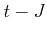
ladders,Proc. Int. Conf. on Physics and Chemistry of Molecular and Oxide Superconductors, Karlsruhe, 1996 [J. Low Temp. Phys. 105, 609-614 (1996)].
- T. Nakajima and H. Aoki, Composite-fermion picture for the
double-layer fractional quantum Hall effect,
Proc. 11th Int. Conf. on Electronic Properties of Two-Dimensional Systems ed. by L. Eaves and P.C. Main [Surf. Sci. 361/362, 83-86 (1996)].
- K. Kuroki and H. Aoki: Superconductivity in the charge-transfer
and Mott-Hubbard regimes of the three-band Hubbard model,
Proc. Int. Conf. on Physics and Chemistry of Molecular and Oxide Superconductors, Karlsruhe, 1996 [J. Low Temp. Phys. 105, 603-608 (1996)].
- T. Kimura, K. Kuroki and H. Aoki: Spin-polarized
current from a Zeeman-split Tomonaga-Luttinger liquid in
quantum wires,
Proc. 23rd Int. Conf. on Physics of Semiconductors, ed. by M. Scheffler and R. Zimmermann (World Scientific, Singapore, 1996), pp.1225-1228.
- P. A. Maksym, H. Imamura and H. Aoki: Vertically
coupled double quantum dot in the fractional quantum Hall
regime -- magic numbers and optical absorption,
Proc. 23rd Int. Conf. on Physics of Semiconductors, ed. by M. Scheffler and R. Zimmermann (World Scientific, Singapore, 1996), pp.1613-1616.
- H. Aoki and T. Nakajima, Composite-fermion picture for the spin-wave excitation in the fractional quantum Hall system,
Proc. 11th Int. Conf. on the Application of High Magnetic Fields in Semiconductor Physics, ed by D. Heiman (World Scientific, 1995), pp.58-61.
- H. Aoki and N. Shima: Electronic structures of lateral
superlattices -- metal/ semimetal/ semiconductor classes and
ferromagnetism,
Proc. 7th Int. Conf. on Superlattices, Microstructures and Microdevices, Banff, 1994 [Superlattices and Microstructures 15, 247-251 (1994)].
- K. Kusakabe and H. Aoki: Robustness of the ferromagnetism in flat bands,
Proc. 20th Int. Conf. on Low Temperature Physics, Oregon, 1993 [Physica B 194-196, 215-216 (1994)].
- K. Kusakabe and H. Aoki: Metallic ferromagnetism in the two-band Hubbard model,
Proc. 20th Int. Conf. on Low Temperature Physics, Oregon, 1993 [Physica B 194-196, 217-218 (1994)].
- T. Nakajima and H. Aoki: Spin waves in double fractional quantum Hall systems,
Proc. ISSP Int. Symposium `Frontiers in high magnetic fields', Tokyo, 1993 [Physica B 201, 327-330 (1994)].
- K. Kuroki and H. Aoki: Multiband superconductivity -- a mapping to the extended attractive Hubbard model,
Proc. Int. Conf. on Physics & Chemistry of Molecular & Oxide Superconductors [J. of Superconductivity 7, 577-579 (1994)].
- K. Kusakabe and H. Aoki: Magnetism in two-band systems with electron correlation,
Proc. Int. Symposium on Chemistry and Physics of Molecular Based Magnetic Materials, 1992 [Mol. Cryst. Liq. Cryst. 233, 71-80 (1993)].
- T. Ando and H. Aoki: Quantum Hall conduction in quantum
wires,
Physica B 184, 365-368 (1993).
- T. Nakajima and H. Aoki: Electronic structure of a double
fractional quantum Hall system of spin 1/2 electrons,
Physica B 184, 91-94 (1993).
- H. Aoki: The quantum Hall effect in anomalous band
structures,
[Surf. Sci. 263, 137-140 (1992)].
- K. Ishida and H. Aoki: Study of one-dimensional biexciton in
a two-band model with long-range interactions,
Proc. Int. Conf. on Physics of Semicondcutors Beijing, 1992, pp.213-216.
- S. Tsuneyuki, H. Aoki and Y. Matsui: New crystal structures of
SiO
 predicted by molecular dynamics study,
predicted by molecular dynamics study,
Proc. Int. Conf. on Computer Aided Innovation of New Materials, Tokyo, 1990, ed. by M Doyama et al (North-Holland, Amdsterdam, 1991), pp.381-384.
- K. Kuroki, H. Aoki and Y. Takada: Superconductivity in a two-band
Hubbard system with inter-band attraction,
Proc. Int. Conf. on Materials and Mechanisms of Superconductivity, High-Temperature Superconductors, (Kanazawa, 1991) [Physica C 185-189, 1453-1454 (1991)].
- K. Kusakabe and H. Aoki: Magnetism in the single and two-band
Hubbard models: generalized Hund's coupling,
Proc. Int. Conf. on Materials and Mechanisms of Superconductivity, High-Temperature Superconductors, (Kanazawa, 1991) [Physica C 185-189, 1505-1506 (1991)].
- K. Kuroki and H. Aoki: Two-band Hubbard model for copper
oxide superconductors,
Proc. 19th Int. Conf. on Low Temperature Physics, Brighton, 1990 [Physica B 165&166, 1011-1012 (1990)].
- S. Tsuneyuki, H. Aoki, M. Tsukada and Y. Matsui: Molecular-
dynamics study of pressure-induced structural transformations in
silica,
Proc. Int. Conf. on Physics of Semiconductors, Thessaloniki, 1990, ed. by E.M. Anastassakis and J.D. Joannopoulos, (World Scientific, Singapore, 1990), p.2221-2224.
[1970's-1980's]
- H. Aoki: Numerical study of two-dimensional Wigner glass in
strong magnetic fields,
[Surf. Sci. 73, 281-290 (1978)].
- E. Yamaguchi, H. Aoki and H. Kamimura: Intra- and inter-state
interactions in Anderson localised states,
Proc. 8th Int. Conf. on Amorphous and Liquid Semiconductors (Cambridge, USA, 1979) ed. by W. Paul and M. Kastner (North- Holland: Amsterdam, 1980) [J. Non-cryst. Solids 35/36, 47-52 (1980)].
- H. Aoki: Anderson localisation in two-band systems,
Proc. 9th Int. Conf. on Amorphous and Liquid Semiconductors (Grenoble, 1981) ed. by B.K. Chakraverty and D. Kaplan (Les Editions de Physique: Les Ulis, 1981) [J. de Phys. 42, Colloque C-4, 51-54 (1981)].
- H. Aoki and T. Ando: Effect of Landau-band structure on the
quantized Hall conductivity in two dimensions,
[Surf. Sci. 113, 27-31 (1982)].
- H. Aoki: Decimation method of real-space renormalisation for
electron systems with application to random systems,
Proc. 10th Int. Colloquium on Group-Theoretical Methods in Physics (Canterbury, 1981) ed. by L.L. Boyle and A.P. Cracknell (North-Holland: Amsterdam, 1982) [Physica A 114, 538-542 (1982)].
- H. Aoki: Gauge-transformation study of quantised Hall effect,
Proc. Int. Symposium on Foundations of Quantum Mechanics (Tokyo, 1983) ed. by S. Kamefuchi (Phys. Soc. Japan, Tokyo, 1984), 346-352.
- H. Aoki and T. Ando: Critical localisation and low-
temperature transport in two-dimensional Landau quantisation,
Surf. Sci. 170, 249-255 (1986).
- H. Aoki: Aharonov-Bohm effect in the quantised Hall effect,
Proc. 2nd Int. Symposium on Foundations of Quantum Mechanics (Tokyo, 1986) ed. by M. Namiki et al (Physical Society of Japan, Tokyo, 1987), 155-164.
- H. Aoki and T. Ando: Quantised Hall effect: from the winding
number to the flow diagram,
in The Application of High Magnetic Fields in Semiconductor Physics ed. by G. Landwehr, (Springer, Berlin, 1987), pp.45-48.
- H. Aoki: Quantum fluctuations in the quantum Hall effect,
Proc. 18th Int. Conf. on Low Temperature Physics (Kyoto, 1987) ed Y. Nagaoka [Japn. J. Appl. Phys. 26, Suppl.3 pp.699-700 (1987)].
- T. Miyazaki, K. Aizawa, H. Aoki, C. Itoh and M. Okazaki:
Monte Carlo study of the epitaxial overlayer with substantial
lattice mismatch,
Proc. 3rd Int. Conf. on Modulated Semiconductor Structures (Montpellier, 1987) [J. de Phys. 48, Colloque C5, 199- 202 (1987)].
[Review articles]
- H. Aoki: Quantised Hall effect,
Rep. Progr. Phys. 50, 655-730 (1987).
- S. Tsuneyuki, H. Aoki and Y. Matsui: Pressure-induced
structural transformations in framework crystal structures: a
molecular dynamics study for silica,
Molecular Simulations 6, 227-238 (1991).
- S. Tsuneyuki, M. Tsukada, H. Aoki and Y. Matsui: Molecular-
dynamics simulation of silica with a first-principles interatomic
potential,
in Dynamic Processes of Material Transport and Transformation in the Earth's Interior, ed. by F. Marumo (Terra Scientific Publishing, Tokyo, 1990), pp.1-21.
- H. Aoki: Two-band models of superconductivity,
in New horizons in low-dimensional electron systems, ed. by H. Aoki, M. Tsukada, M. Schlüter and F. Lévy (Kluwer Academic Publishers, Dordrecht, 1992), pp.261-280.
- K. Kuroki and H. Aoki: Quantum Monte Carlo simulation of multiband fermion systems and its application to superconductivity
in Quantum Monte Carlo Methods in Condensed Matter Physics ed. by M. Suzuki (World Scientific, Singapore, 1993), pp.205-219.
- P. A. Maksym, H. Imamura, G. Mallon and H. Aoki:
Molecular aspects of electron correlation in quantum dots,
J. Phys.: Condensed Matter 12, R299-R334 (2000).
- H. Aoki, Y. Syono and R. J. Hemley: Physics and mineralogy --
the current confluence,
in Physics Meets Mineralogy -- Condensed-Matter Physics in Geosciences, ed. by H. Aoki, Y. Syono and R. J. Hemley (Cambridge Univ. Press, 2000), p. 3.
- Hideo Aoki: Opportunities in the diversity of crystal
structures -- a view from condensed-matter physics,
in Physics Meets Mineralogy -- Condensed-Matter Physics in Geosciences, ed. by H. Aoki, Y. Syono and R. J. Hemley (Cambridge Univ. Press, 2000), pp.259-298.
- Hideo Aoki:
Transport around criticalities --
localisation-delocalisation and paramagnetic-ferromagnetic transitions,
in Michael Pollak Festschrift (ed. by Allen Hunt),
Phil. Mag. 81, 859-874 (2001).
- Hideo Aoki: Superconductivity from the repulsive electron interaction
-- from 1D to 3D,
in The Anderson Transition and its Ramifications -- Localisation, Quantum Interference, and Interactions (Lecture Notes in Physics 630) ed. by Tobias Brandes et al.(Springer Verlag, 2003), pp. 219-243.
- Hideo Aoki: Superconductivity in frustrated systems,
a Viewpoint article in J. Phys.: Condensed Matter, 16, V1 - V5 (2004).
- Hideo Aoki: Triplet superconductivity
-- spin vs charge fluctuations and fermiology,
Physica B 374-375, 229-234 (2006).
[Books]
- Hideo Aoki and Mildred S. Dresselhaus (ed.):
Physics of Graphene (Springer, 2014).
- Yasuhiro Hatsugai and Hideo Aoki:
Graphene --- topological properties, chiral symmetry and their manipulation,
in
Hideo Aoki and Mildred S. Dresselhaus (ed.):
Physics of Graphene (Springer, 2014), Ch.7, pp. 213-250.
- H. Kamimura and H. Aoki: Physics of Interacting Electrons in
Disordered Systems (International Series of Monographs on Physics
76), Oxford University Press, Oxford, 1989.
- H. Aoki, M. Tsukada, M. Schlüter and F. Lévy (editors): New
Horizons in Low-Dimensional Electron Systems (in the series
Physics and Chemistry of Materials with Low-Dimensional
Structures), Kluwer Academic Publishers, Dordrecht, 1992.
- H. Aoki and S. Komiyama (editors):
Proc. 12th Int. Conf. on Electronic Properties of Two-Dimensional
Systems, Physica B 249-251 (1998).
- Hideo Aoki, Yasuhiko Syono and Russell J. Hemley (editors):
Physics Meets Mineralogy -- Condensed-Matter Physics
in Geosciences, Cambridge Univ. Press, 2000.
- H. Aoki: Spin states and transport in correlated electron systems
in Low-Dimensional Systems -- Interactions and Quantum Transport Properties ed. by T. Brandes (Springer Series `Lecture Notes in Physics' 544, Springer, 2000), p. 167.
- H. Aoki: Composite fermions -- excitation
spectra in the odd- and even-fraction quantum Hall liquids
in Dynamics of Gauge Fields ed. by A. Chodos et al. (Universal Academy Press, 2000), pp. 371-384.
- G. Kido, T. Takamasu, H. Aoki and K. Takita (editors):
Proc. 14th Int. Conf. on High Magnetic Fields in
Semiconductor Physics, Matsue, 2000, Physica B 298 (2001).
- G. Saito, S. Kagoshima, K. Kanoda, H. Aoki, T. Mori, Y. Misaki and
H. Yamochi (editors):
Proc. 4th Int. Symposium on Crystalline Organic Metals,
Superconductors and Ferromagnetism, Hokkaido, 2001,
Synthetic Metals 133-134 (2003).
- Hideo Aoki: Superconductivity in highly correlated systems,
in Condensed Matter Theories 21 ed. by Hisazumi Akai, Atsushi Hosaka, Hiroshi Toki and F. Bary Malik (Nova Science, 2007), pp.147-161.
- Takashi Oka and Hideo Aoki: Nonequilibrium quantum breakdown in a strongly correlated electron system,
in Quantum Percolation and Breakdown [Lecture Notes in Physics 762, 251-285 (Springer Verlag, 2009)].
- Hideo Aoki: Integer quantum Hall effect
in P. Bhattacharya, R. Fornari and H. Kamimura (ed.):
Comprehensive Semiconductor Science & Technology (Elsevier, 2011), pp.175-209.
- Hideo Aoki and Mildred Dresselhaus (ed.):
Physics of Graphene (Springer-Verlag, to be published).
[書籍（国内出版）]
- 青木秀夫：量子ホール効果（「物理学最前線」第１１巻）（共立出版、1985）。
- 青木秀夫：固体物理におけるアドバンスト・コンピューティング
（有馬朗人、村上周三、金田康正（編）：アドバンスト・コンピューティング--21世紀
の科学技術基盤（培風館、1992）第3.6章）。
- 青木秀夫：量子ホール効果の理論（安藤恒也（編）「量子効果と磁場」（丸善,1995）第４章）。
- 青木秀夫、川上則雄、永長直人（編）：物理学論文選集「物性物理における場の理論的方法」（日本物理学会、1995）。
- 青木秀夫：相互作用する電子（塚田捷編「21世紀 学問のすすめ」
第９巻「物理学のすすめ」（筑摩書房, 1997）、第６章）。
- 草部浩一、青木秀夫：「強磁性」
（青木秀夫監修：多体電子論、第I巻；東京大学出版会、
1998）。
- 黒木和彦、青木秀夫：「超伝導」
（青木秀夫監修：多体電子論、第II巻；東京大学出版会、1999）。
- 中島龍也、青木秀夫：「分数量子ホール効果」
（青木秀夫監修：多体電子論、第III巻；東京大学出版会、1999）。
- 青木秀夫、樽茶清悟、十倉好紀（編）：「相関電子系の物質設計」特集号、
固体物理 36、第10号 (2001)。
- 青木秀夫：「高温超伝導の機構はどこまで解明されたか」、
日本物理学会（編）：「ボース・アインシュタイン凝縮から高温超伝導へ」、 （日本評論社、2003）第５章。
- 青木秀夫：「超伝導入門」（裳華房、2009）。
- 青木秀夫：グラフェンの特異な物理、
斉木幸一朗、徳本洋志（編）「グラフェンの機能と応用展望」 （CMC出版、2009）。
- 青木秀夫：「物性物理学」（培風館出版予定）。
- 岡 隆史、青木秀夫：強相関系の非平衡物理、
日本物理学会誌 67, 234 (2012)。
- 青木秀夫：矢内原と今 --- 理科vs文科、
UP, No 476 (2012年6月）、p.22。
- 青木秀夫：BCS: 50 Years （書評）、
日本物理学会誌 67, 414 (2012)。
- 青木秀夫：100年、1000年、
UP, No 483 (2013年1月）、p.18。
- 青木秀夫：物性／素粒子の学際を学部生と楽しめるか、 固体物理 48, 193 (2013)。
- 辻 直人、岡 隆史、青木 秀夫：
非平衡強相関系における斥力・引力転換、
固体物理 48, 425 (2013)。
- 島野 亮、青木秀夫：グラフェンの量子ファラデー効果、
光アライアンス 24, No.11, p.21 (2013)。
- 松永隆佑、辻 直人、青木秀夫、島野 亮：
超伝導体中のヒッグスモード −
高強度テラヘルツ波による検出とヒッグス共鳴第三高調波発生、
固体物理（出版予定）。
[解説（国内出版）]
[2000-]
- 青木秀夫：Nevill Mottの物理と固体物理のこれから、
固体物理 35, 451-462 (2000).
- 青木秀夫：物理学と鉱物学、
固体物理 35, 968 (2000).
- 青木秀夫：木原先生の思い出、
固体物理 36, 564 (2001).
- 青木秀夫：電子相関と物質設計 -- 総論、
固体物理 36「相関電子系の物質設計」特集号、607-638 (2001).
- 青木秀夫:低次元電子相関の輝き--磁性と超伝導
数理科学 40, No.2 , pp.31-39 (2002)。
- 青木秀夫：「２次元電子系」プラハ国際会議便り、
固体物理 37, 110 (2002).
- 青木秀夫：レントゲンと量子ホール効果、
固体物理 37, 119 (2002).
- 青木秀夫：Blochとの出会い、
日本物理学会誌 57, 118 (2002).
- 青木秀夫：量子ドット -- 電子分子から量子液滴まで、
物性研究 78, 236-243 (2002).
- 青木秀夫：物性物理における保存則、
数理科学2003年1月号、 p.41 （別冊数理科学「対称性と保存則」（サイエンス社、2008）、p68に再録）。
- 青木秀夫：物性物理におけるトポロジー、
数理科学2004年2月号、 p.22。
- 木口学、斉木幸一朗、有田亮太郎、青木秀夫：
金属誘起ギャップ状態 -- 金属/絶縁体界面で何が起こるか、
固体物理 39, 13 (2004)。
- 有田亮太郎、諏訪雄二、黒木和彦、青木秀夫：
有機強磁性高分子の物質設計、
固体物理 40, 177-187 (2005)。
- 青木秀夫：量子ホール効果 -- 進展と展望、
日本物理学会誌 61, 19-26 (2006).
- 木口 学、有田亮太郎、斉木幸一朗、青木秀夫：
イオン結晶の極性表面は可能か？
— エピタキシーによるMgO極性表面の実現と第一原理電子状態、
固体物理 41, 13 (2006)。
- 青木秀夫：物理学における位相、
数理科学2007年6月号、p. 5。
- 有田亮太郎、青木秀夫、野末泰夫：
アルカリ金属を吸蔵したゼオライトの電子状態 -- 「超原子」結晶、
日本物理学会誌、62, 694 (2007)。
- 青木秀夫、大栗博司：
物性と素粒子 — 多様性と統一の物理的世界像の対話、
固体物理 42, 505 (2007)。
- 青木秀夫、上田正仁、福山寛：新しい物質科学の創成 −
ブレイクスルーに向けて、
科学 78, 220 (2008)。
- 青木秀夫：銅酸化物は超えられるか − 理論の立場から、
パリティ、2008年5月号、p.30。
- 青木秀夫：鉄系超伝導体、
化学、63, No.12, p.26 (2008)。
- 青木秀夫：南部理論と物性物理学、
日本物理学会誌、64, 80 (2009)。
- 青木秀夫：南部理論と物性物理学 -- 超伝導を中心に、
原子核研究（南部先生ノーベル賞受賞記念特集号）53, Suppl. 3, 183 (2009)。
- 黒木和彦、有田亮太郎、青木秀夫：鉄系超伝導体における理論的研究の現状 -- 有効模型とペアリング機構、
日本物理学会誌64, 826 (2009)。
- 青木秀夫、大栗博司：物性物理学と素粒子物理学の対話 — IPMUフォーカス・ウィークの報告、
日本物理学会誌 65, 638 (2010)。
- 青木 秀夫、初田 哲男：超伝導への傾注 -- 物性物理とハドロン物理から、
数理科学 2010年9月「南部陽一郎」特集号、p.14。
- 岡 隆史、青木秀夫：グラフェンにおける光誘起ホール効果と
カゴメ・フォトニック結晶における光の局在、
光学 39, 445 (2010)。
- 初貝安弘、青木秀夫：グラフェンの物理、
「固体物理」45, 457 (2010)。
- 青木秀夫：ディラック電子、
固体物理 45, 753 (2010)。
- 岡 隆史、青木秀夫：
グラフェンのトポロジカルな性質とその光制御、
表面科学32, 196 (2011)。
- 森本 高裕、池辺 洋平、島野 亮、青木 秀夫：
光で見る量子ホール効果、
日本物理学会誌 66, 365 (2011)。
- 岡 隆史、青木秀夫：強相関系の非平衡物理、
日本物理学会誌 67 234 (2012)。
[1984-1999]
- 青木秀夫：量子ホール効果と磁場中２次元電子系、
固体物理 19, 437-447 (1984)。
- 青木秀夫：電子系の乱れと秩序、
数理科学 23, No.9, pp.10-15 (1985)。
- 青木秀夫：ケプラーと５回対称準結晶、
固体物理 21, 697-698 (1986)。
- 青木秀夫：半導体超格子構造(MSS)モンペリエ国際会議の印象、
固体物理 22, 931-934 (1987)。
- 青木秀夫：ダイアモンドの年齢、
固体物理 23, 363 (1988)。
- 宮崎剛英、岡崎誠、青木秀夫：
格子非整合エピタキシーのシミュレーション、
固体物理 24, 37-47 (1989)。
- 青木秀夫：分数統計と高温超伝導、
固体物理 24, 777-788 (1989)。
- 青木秀夫：「半導体物理学における強磁場」ヴュルツブルク会議から、
固体物理 26, 73-78 (1991)。
- 青木秀夫：高温超伝導とエニオン、
科学 61, 388-397 (1991)。
- 青木秀夫：「低次元場の理論と物性物理」湯川国際セミナーだより、
固体物理 26, 913-920 (1991)。
- 青木秀夫：ベリーの位相、
数理科学 29, No.11, pp.11-15 (1991) （別冊数理科学「場の理論」（サイエンス社、1999）、p.107 に再録）。
- 青木秀夫、「第一原理からの電子物性」小特集「序」、
日本物理学会誌 48, pp.425-428 (1993)。
- 青木秀夫：量子ホール効果、
数理科学 32, No.5, pp.17-24 (1994) （別冊数理科学「現代物理の展開 -- 発見と創造のドラマ」 （サイエンス社、1997）, p. 117に再録）。
- 青木秀夫：分数量子ホール効果、
数理科学 34, No.1, pp.46-52 (1996)。
- 青木秀夫、草部浩一、中島龍也、黒木和彦：
誌上セミナー「多体電子論の新展開
−磁性、超伝導、分数量子ホール効果」:
(1) 強相関電子系における強磁性I、固体物理 30, 769-780 (1995)、
(2) 強相関電子系における強磁性II、固体物理 30, 867-874 (1995)、
(3) 平坦バンド強磁性、固体物理 31, 16-26 (1996)、
(4) 平坦バンドの超構造模型、多バンド強磁性 序、固体物理 31, 99-108 (1996)、
(5) 多バンド電子系における強磁性、固体物理 31, 205-215 (1996)、
(6) 分数量子ホール効果 序、固体物理 31, 447-458 (1996)、
(7) 分数量子ホール効果の複合粒子理論、固体物理 31, 529-540 (1996)、
(8) 分数量子ホール系における非対角長距離秩序、固体物理 31, 755-762 (1996)、
(9) 分数量子ホール効果の複合フェルミオン描像、固体物理 31, 957-970 (1996)、
(10) 量子ホール系の内部自由度、固体物理 32, 143-158 (1997)、
(11) 強相関系における超伝導 序、固体物理 32, 376-392 (1997)、
(12) １次元系におけるスピン・ギャップと超伝導、固体物理 32, 469-485 (1997)、
(13) スピン・ギャップと超伝導II、 固体物理 32, 557-567 (1997)、
(14) ２次元強相関系における超伝導の可能性 I、 固体物理 32, 707-720 (1997)、
(15) ２次元強相関系における超伝導の可能性 II、 固体物理 32, 877-885 (1997)。
- 中島龍也、青木秀夫：分数量子ホール効果と複合フェルミオン描像、
日本物理学会誌 50, 725-729 (1995)。
- 青木秀夫:物性物理におけるゲージ理論、
数理科学 35, No.2 , pp.28-38 (1997) （別冊数理科学「場の理論」（サイエンス社、1999、p.80 に再録）。
- 寺尾貴道、中山恒義、青木秀夫：
臨界波動関数のマルチフラクタル解析--量子ホール系、
固体物理 32, 671-683 (1997)。
- 今村裕志、青木秀夫、Peter A. Maksym：強磁場中の量子ドット--
「電子分子」と魔法数、
日本物理学会誌、53, 36-40 (1998)。
- 青木秀夫：「半導体物理学への強磁場の応用」会議だより、
固体物理 34, 49-55 (1998)。
- 青木秀夫：生物学者に説明できますか、
固体物理 34, 55-56 (1999).
- 青木秀夫：1998年度ノーベル物理学賞、
科学 69, No.1, 9-13 (1999).
- 中島龍也、青木秀夫：分数量子ホール系の複合粒子理論、
固体物理 34「量子輸送現象における新展開」特集号、339-350 (1999).
- 小野田 勝、水崎高浩、大塚孝治、青木秀夫：
モンテカルロ対角化法からみた
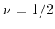
状態、物性研究 72, 188 (1999)。
- 黒木和彦、青木秀夫：斥力ハバード模型は超伝導になるか、
日本物理学会誌、54, 557-561 (1999)。
2016
2015
2014
2013
2011
2010
ご連絡先
〒113-0033
東京都文京区本郷7-3-1
理学部１号館
東京大学 大学院
理学系研究科 物理学専攻
青木 秀夫
Email:
aoki_at_phys.s.u-tokyo.ac.jp